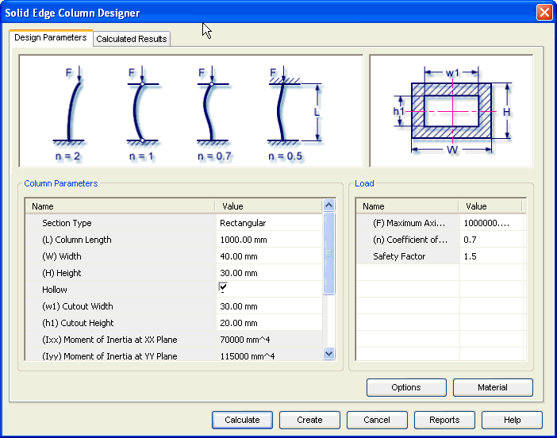

Column Design Parameters tab
The Design Parameters tab provides the options you use to enter details required for the design of the column. This tab consists of 5 areas.

Contains graphical representation of section type and the parameters that define size and shape of the section.
Defines the parameters for the section like section type, section length and other dimensions. This area also displays the results related to geometry of the section.
Define force magnitude, coefficient of end condition and safety factor for the strength validation of the column
Use the Options button to access the Input Conditions window. The inputs provided in the Design Parameters tab are based on the selections from the Input Conditions window.
Use the Material button to select the material of the column.